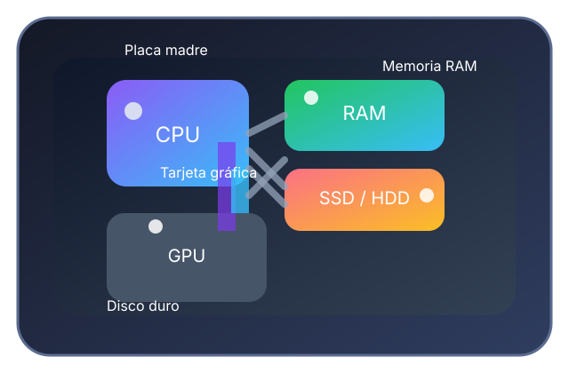

Importancia
Permite diseñar sistemas eficientes, optimizar el rendimiento y asegurar compatibilidad entre hardware y software. Es la base de la ingeniería de sistemas y de la experiencia de usuario.
Soy de la ciudad de Salcedo, tengo 20 años, me gusta jugar fútbol y actualmente estudio Ingeniería en Software.

Unidades diseñadas con teoría, ejemplos y ejercicios resueltos.

Glassmorphism, animaciones suaves y una paleta lila futurista.
Espacio dedicado a la estructura física y lógica de un computador. Aquí encontrarás componentes, sistemas operativos y sistemas de numeración con explicaciones completas.

Permite diseñar sistemas eficientes, optimizar el rendimiento y asegurar compatibilidad entre hardware y software. Es la base de la ingeniería de sistemas y de la experiencia de usuario.
Incluye distribución de memorias, ciclos de instrucción, tipos de bus y modelos de procesamiento. Una arquitectura robusta mejora estabilidad, seguridad y velocidad.
Coordina el procesamiento, manejo de memoria, control de dispositivos, transferencia de datos y ejecución de programas. Supervisa interrupciones, ciclos y accesos a almacenamiento.
Se usa en computadoras personales, servidores, sistemas embebidos, centros de datos y dispositivos móviles. Define cómo se construyen software y hardware confiables.

Definición: Unidad central de proceso que ejecuta instrucciones.
Función: Interpretar y procesar comandos del software.
Características: Núcleos, frecuencia, caché y arquitectura.
Importancia: Determina la velocidad general del sistema.
Ejemplo: Ejecutar una operación aritmética en una aplicación.

Definición: Memoria de acceso aleatorio para datos temporales.
Función: Almacenar programas y datos en uso.
Características: Volátil, rápida y de acceso directo.
Importancia: Afecta multitarea y velocidad de respuesta.
Ejemplo: Cargar una aplicación mientras trabajas con otras abiertas.

Definición: Disco duro magnético para almacenamiento persistente.
Función: Guardar archivos y programas a largo plazo.
Características: Mayor capacidad, menor velocidad y alta durabilidad.
Importancia: Ideal para archivos grandes y copias de seguridad.
Ejemplo: Guardar fotos y documentos.

Definición: Unidad de estado sólido con memoria flash.
Función: Almacenar datos con acceso rápido.
Características: Mayor velocidad, menor ruido y menor latencia.
Importancia: Mejora el arranque y la carga de aplicaciones.
Ejemplo: Sistema operativo arrancando en segundos.

Definición: Placa base que conecta todos los componentes.
Función: Distribuir energía y datos entre CPU, memoria y periféricos.
Características: Ranuras, chipset y puertos de expansión.
Importancia: Define compatibilidad y capacidades del sistema.
Ejemplo: Serie de placas para gaming o servidores.

Definición: Procesador dedicado a gráficos y cálculos paralelos.
Función: Renderizar imágenes, videos y procesos masivos.
Características: Núcleos, VRAM y TDP.
Importancia: Crucial para videojuegos, multimedia y diseño.
Ejemplo: Crear videos con software de edición.

Definición: Transforma energía de la red a voltajes de la PC.
Función: Proveer corriente estable a los componentes.
Características: Eficiencia, modularidad y potencia.
Importancia: Evita fallas y protege el hardware.
Ejemplo: 650W para un equipo de trabajo con GPU.

Teclado, ratón, micrófono y escáner introducen datos al sistema.
Permiten controlar aplicaciones y enviar información al computador.

Pantalla, impresora y parlantes muestran resultados al usuario.
Transforman señales del computador en información perceptible.

Memorias externas, tarjetas y discos guardan datos de forma permanente.
Son esenciales para respaldos y para conservar información a largo plazo.
El sistema operativo administra recursos, procesos y dispositivos, y ofrece la interfaz que utiliza el usuario para interactuar con el computador.

Historia: Desarrollado por Microsoft desde los 80s como interfaz gráfica para DOS y evolucionado a Windows 10/11.
Definición: Sistema operativo de escritorio con amplia compatibilidad de software.
Características: Interfaz gráfica, compatibilidad amplia, actualizaciones frecuentes.
Ventajas: Fácil uso, soporte de juegos y aplicaciones empresariales.
Desventajas: Requiere licencias y puede consumir más recursos.
Aplicaciones: Oficinas, multimedia, videojuegos y productividad.

Historia: Kernel creado por Linus Torvalds en 1991 que dio origen a múltiples distribuciones.
Definición: Sistema operativo abierto y modular que se usa en servidores y escritorios.
Características: Personalizable, seguro, estable y de código abierto.
Ventajas: Gratis, flexible y con gran comunidad de soporte.
Desventajas: Requiere más conocimientos para administración avanzada.
Aplicaciones: Servidores, desarrollo, IoT y supercomputación.

Historia: Nacido de NeXT y lanzado por Apple como sucesor de Mac OS clásico.
Definición: Sistema operativo para computadoras Apple con fuerte integración hardware-software.
Características: Interfaz pulida, ecosistema Apple, seguridad y rendimiento optimizado.
Ventajas: Estabilidad, experiencia de usuario consistente y buen soporte creativo.
Desventajas: Limitado a hardware Apple y menor flexibilidad de personalización.
Aplicaciones: Diseño gráfico, desarrollo, edición audiovisual y trabajo creativo.

Historia: Lanzado por Google en 2008 como sistema abierto para dispositivos móviles.
Definición: Sistema operativo móvil basado en Linux y optimizado para pantallas táctiles.
Características: Personalización, tienda de aplicaciones amplia y soporte para múltiples marcas.
Ventajas: Flexibilidad, variedad de dispositivos y gran ecosistema.
Desventajas: Fragmentación de versiones y seguridad variable según fabricante.
Aplicaciones: teléfonos, tablets, dispositivos inteligentes y wearables.

Historia: Introducido por Apple en 2007 con el primer iPhone como sistema cerrado y controlado.
Definición: Sistema operativo móvil exclusivo de dispositivos Apple.
Características: Seguridad, actualización constante y experiencia optimizada.
Ventajas: Rendimiento fluido, protección de datos y ecosistema Apple integrado.
Desventajas: Menor flexibilidad y solo disponible en hardware Apple.
Aplicaciones: smartphones, tablets y dispositivos móviles Apple.
Exploramos los sistemas decimal, binario, octal y hexadecimal, su uso en informática y ejemplos de conversión entre ellos.
Definición: Sistema posicional de base 10 con dígitos 0-9.
Base: 10
Características: Natural para humanos y ampliamente usado.
Ventajas: Fácil de entender y usar.
Desventajas: No ideal para hardware binario.
Ejemplo: 345 = 3×10² + 4×10 + 5.
Aplicaciones: finanzas, medidas y calculadoras.
Definición: Sistema posicional de base 2 con símbolos 0 y 1.
Base: 2
Características: Fundamental en electrónica digital.
Ventajas: Compatible con circuitos de dos estados.
Desventajas: Extiende los números en más dígitos.
Ejemplo: 1101₂ = 13₁₀.
Aplicaciones: codificación de datos, memoria y procesadores.
Definición: Base 8 con dígitos 0-7.
Base: 8
Características: Agrupa tres bits en un dígito.
Ventajas: Representación compacta de binario.
Desventajas: Menos común que hexadecimal.
Ejemplo: 17₈ = 15₁₀.
Aplicaciones: sistemas antiguos y permisos Unix.
Definición: Base 16 con dígitos 0-9 y A-F.
Base: 16
Características: Agrupa cuatro bits en un dígito.
Ventajas: Muy compacta para representar binario.
Desventajas: Requiere aprender letras A-F.
Ejemplo: 1A₁₆ = 26₁₀.
Aplicaciones: direcciones de memoria y colores web.

Una vista rápida de cómo se representan los mismos valores en decimal, binario, octal y hexadecimal.
| Sistema | Base | Uso |
|---|---|---|
| Decimal | 10 | Contabilidad y métricas |
| Binario | 2 | Procesadores y lógica |
| Octal | 8 | Agrupación de bits |
| Hexadecimal | 16 | Direcciones y color |
Convertir 45₁₀ a binario.
Lectura inversa: 45₁₀ = 101101₂.
Explicación completa de algoritmos, ejemplos reales, diagramas de flujo y pseudocódigo para entender cómo se resuelven problemas paso a paso.

Un algoritmo es una secuencia finita de pasos ordenados y claros para resolver un problema o completar una tarea.
Son esenciales para automatizar procesos, diseñar soluciones eficientes y garantizar resultados consistentes.
Finitud, claridad, efectividad, entrada/salida y determinismo. Deben ser reproducibles y comprensibles.
Permiten optimizar recursos, reducir errores, mejorar rendimiento y facilitar el mantenimiento.
Algoritmos se usan en búsqueda, ordenación, redes, criptografía, inteligencia artificial y sistemas embebidos.

Objetivo: Obtener una taza de café lista.
Pasos: Hervir agua, colocar café, verter agua, servir.

Objetivo: Limpiar manos correctamente.
Pasos: Mojar, aplicar jabón, frotar 20s, enjuagar, secar.
Objetivo: Preparar arroz suelto.
Pasos: Lavar arroz, medir agua, hervir, cocer, reposar.

Objetivo: Llegar con seguridad al otro lado.
Pasos: Observar semáforo, detenerse, cruzar con cuidado.
Objetivo: Iniciar un equipo correctamente.
Pasos: Presionar encendido, esperar POST, arranque del SO.

Objetivo: Comprar artículos necesarios con eficiencia.
Pasos: Hacer lista, ir, seleccionar productos, pagar.
Objetivo: Comunicar información a un contacto.
Pasos: Abrir app, seleccionar contacto, escribir, enviar.
Objetivo: Obtener efectivo del cajero.
Pasos: Insertar tarjeta, seleccionar monto, confirmar, retirar.
Los diagramas de flujo representan visualmente la solución de un algoritmo usando símbolos estándar.
Marca el punto de entrada y salida del proceso.

Representa una operación o cálculo que debe realizarse.

Indica datos que entran o salen del sistema.

Permite ramificar el flujo según una condición.

Representa un informe o registro producido por el proceso.

Almacena información que se puede consultar más tarde.

Conecta partes del diagrama y mejora su legibilidad.
Evaluar si un número es par o impar usando la operación módulo.
Leer n Si n % 2 = 0 Entonces Escribir "par" Sino Escribir "impar" FinSi
Seguir pasos ordenados asegura una compra rápida y sin olvidos.
Hacer lista Ir al supermercado Seleccionar productos Pagar y salir
Un algoritmo sencillo con verificaciones en cada paso.
Insertar tarjeta Elegir monto Confirmar Retirar efectivo
Representa algoritmos en lenguaje estructurado sin depender de la sintaxis de un lenguaje de programación.
Ejecuta instrucciones en orden de arriba hacia abajo.
Leer base Leer altura area = base * altura Escribir area
Toma decisiones según condiciones.
Si nota >= 70 Entonces Escribir "Aprobado" Sino Escribir "Reprobado" FinSi
Repite acciones mientras se cumpla una condición.
i = 1 Mientras i <= 5 Hacer Escribir i i = i + 1 FinMientras
Unidad enfocada en Python básico, estructuras condicionales, ciclos y la simplificación de funciones booleanas con Mapas de Karnaugh.

Python es un lenguaje de programación interpretado, fácil de leer y muy popular en la educación y en aplicaciones prácticas.
Creado por Guido van Rossum y lanzado en 1991, Python se diseñó para ser sencillo, con sintaxis clara y gran legibilidad.
Tipado dinámico, indentación obligatoria, gran biblioteca estándar y soporte para múltiples paradigmas.
Ventajas: fácil aprendizaje, rápido prototipado y comunidad amplia. Desventajas: menor velocidad comparado con lenguajes compilados y consumo de memoria.
Desarrollo web, automatización, análisis de datos, prototipos y scripts de uso diario.
Son nombres que almacenan datos. Se usan para guardar valores temporales en un programa.
nombre = 'Johana' edad = 20 nota = 8
int: enteros. float: números decimales. str: texto.
numero = 5 altura = 1.65 texto = 'Hola'
input() lee texto del usuario. print() muestra resultados.
nombre = input('Nombre: ')
print('Hola', nombre)
if, else y elif permiten ejecutar bloques de código según condiciones.
if edad >= 18:
print('Mayor de edad')
else:
print('Menor de edad')
for y while repiten instrucciones según una condición o un rango.
for i in range(5): print(i) while i < 5: i += 1
Ejemplos con int, float, str, input, print, if, else, elif, while y for.
Herramienta visual para simplificar funciones booleanas y reducir la complejidad de circuitos lógicos.

Permite agrupar términos adyacentes para simplificar expresiones de dos variables.
Representa ocho combinaciones y simplifica expresiones más complejas.
Ofrece una representación eficiente para expresiones booleanas con cuatro variables.
Leer dos números y mostrar su suma.
a = int(input('a: '))
b = int(input('b: '))
print(a + b)
Convertir Celsius a Fahrenheit.
c = float(input('Celsius: '))
f = c * 9/5 + 32
print(f)
Leer texto y comprobar si contiene la palabra 'hola'.
texto = input('Texto: ')
if 'hola' in texto.lower():
print('Contiene hola')
else:
print('No contiene')
Sumar los primeros n enteros usando while.
n = int(input('n: '))
i = 1
suma = 0
while i <= n:
suma += i
i += 1
print(suma)